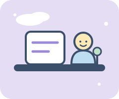

Take a deep breath. You can get through this week.
Midterms, finals, and deadline pileups can make everything feel urgent at once. This site walks you through eight small steps to get organized, protect your energy, and finish the week feeling in control.
See the 8 steps Meet the team
Project goals
Reduce overwhelm
Turn a messy pile of stress into a short, clear list of what actually needs to get done.
Balance work and well-being
Show that rest, food, water, movement, and fun are part of getting work done, not a reward for finishing it.
Make it doable
Offer simple, free steps that fit into a busy student schedule with no special tools required.
Who this is for
Our target audience is Syracuse University students who feel overwhelmed during midterms and finals, face deadline pileups, and find it hard to balance their workload with their mental well-being.
Ready? Go to the 8-step guide or learn who made it.